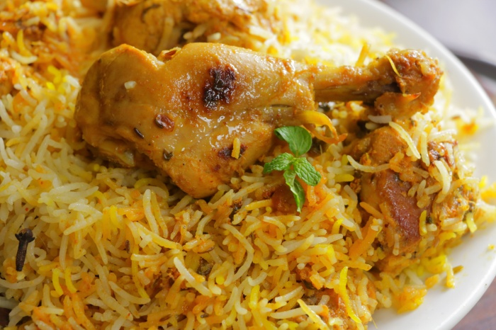

Hyderabadi Chicken Dum Biryani | How to make Hyderabadi Chicken Dum Biryani

Ingredients
- 1/2 Kg Chicken
- 1 tsp Black Cumin
- 1 tbsp Ginger Garlic Paste
- 1/3 cup Fried Onions
- Small Bunch Mint Leaves
- 2 spoons Green Coriander
- 2 spoons Ghee
- Juice of one Lemon
- 1 tbsp Mirchi
- 1 tsp Roasted Cumin Powder
- 1 tsp Coriander Powder
- 1/2 tsp Garam Masala
- 1/4 tsp Turmeric
- Salt to taste
- 2 liters Water
Instructions
- Add all Spices to ½ Kilo tender Chicken and coat the pieces well.
- Marinate this for two hours or refrigerate overnight. If it is kept overnight, the pieces become juicy. Those who do not have a refrigerator can leave them outside.
- Boil 2 litres of Water and add all Biryani ingredients to it. When the Water boils, add the Basmati Rice, soaked for an hour, and cook till 70 % on a high flame. If the Rice is cooked, but the grain is a little brittle, it means that it is cooked to 70%.
- Add the marinated Chicken to a thick-bottomed vessel, then strain the cooked Basmati Rice and all Biryani Masalas and add them over the Chicken.
- Now add Green Coriander, Garam masala, Ghee, Saffron water over the Rice. Cover it with tissues or Banana Leaf and seal it so that the steam does not escape.
- Then Dum the Rice for 8 minutes on a medium flame and for 7 minutes on a low flame. Then switch off the stove and let it rest for 15 minutes.
- Then turn it over with a flat ladle from the bottom.
Subscription
Free On First Month
$30/Month
$150/6 Months
$300/Annum
X